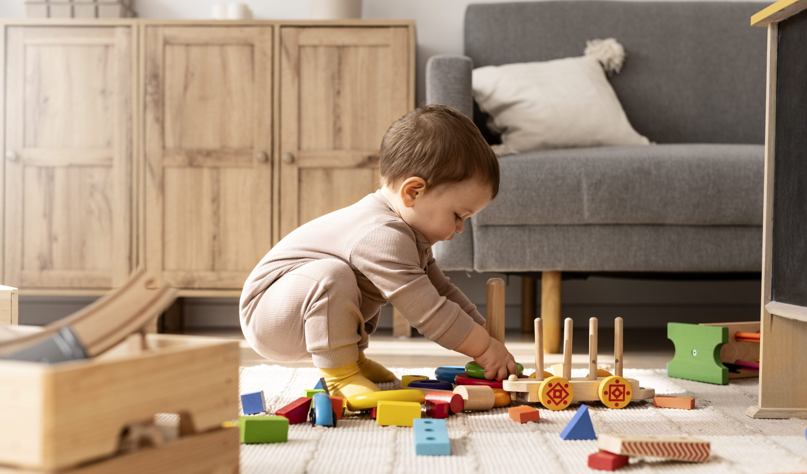

Maternidade
Entendemos que a maternidade é uma jornada repleta de emoções do amor imenso aos desafios inesperados.
Sabemos que a maternidade exige muito, e por isso estamos aqui para ajudar você a encontrar formas de nutrir a sua saúde física, emocional e mental.
Com conteúdos que vão desde bem-estar pessoal até cuidados com os pequenos, queremos ser o seu ponto de apoio para uma maternidade mais leve e equilibrada.
A maternidade constitui uma das fases mais belas da vida de uma mulher. mesmo cheia de altos e baixos, é inegável que ser mãe deixará marcas positivas e inesquecíveis em sua história, advindas dessa grandiosa relação entre mãe e filho.
Alguns videos para ajudar
Estabeleça uma Rotina
Crianças prosperam com uma rotina consistente. Defina horários para alimentação, sono e atividades. A rotina das crianças não envolve apenas atenção quanto à hora de dormir, mas também diz respeito à organização do horário das tarefas cotidianas. Dessa forma, liste junto com a criança todos os afazeres diários, como dormir, ir à escola, fazer o dever de casa, comer, brincar, participar de atividades extras etc. Veja:
1 - Defina um horário para dormir;
2 - Planeje a alimentação;
3 - Monte um quadro de atividades;
4 - Incluir pequenos afazeres domésticos;
5 - Monitore uso de telas.
Eletrônicos para Crianças
Tablets e smartphones podem ser divertidos e úteis para o desenvolvimento da criança. Jogos e vídeos educativos, por exemplo, são recursos que auxiliam no processo de aprendizado, além de entreter a criança em momentos de lazer. No entanto, o uso excessivo das telas digitais na infância pode ser prejudicial à saúde em determinadas circunstâncias. Cada vez mais, pesquisas estão sendo desenvolvidas para entender os riscos associados ao uso de telas por crianças. Veja os potenciais prejuízos à saúde:

1 - Desenvolvimento Cognitivo;
2 - Comprometimento da Visão;
3 - Sedentarismo;
4 - Prejuízos ao Sono;
5 - Acesso a conteúdos inapropriados.
Com que idade permitir o uso de eletrônicos?
A maioria dos profissionais de saúde mental é a favor de protelar o máximo possível o uso de telas. A SBP recomenda que o uso comece somente a partir dos dois anos, sempre aos poucos e, claro, com supervisão. Ainda segundo a instituição, o limite do tempo de uso desses aparelhos para crianças pode ser determinado pela faixa etária, conforme descrito abaixo.
- Crianças menores de dois anos: não deve haver contato com telas ou videogames durante essa idade;
- Crianças de dois a cinco anos: no máximo até uma hora por dia;
- Crianças dos seis aos 10 anos: recomenda-se a utilização de uma a duas horas por dia;
- Dos 11 aos 18 anos: nessa fase da vida, é indicado o limite de duas a três horas por dia.
Educação Financeira
Envolva-se ativamente na educação financeira desde cedo, tanto para você quanto para a criança. Faça um orçamento e reserve uma poupança para emergências e futuro. Considere um planejamento para a educação do seu filho, seja em escolas, cursos ou atividades extracurriculares.
Educação Financeira para Crianças
Por vezes, falar sobre o dinheiro com os pequenos pode ser complicado. No entanto, quanto mais cedo for o contato com o universo das finanças, abordando a questão da educação financeira para crianças, mais fácil será lidar com esse assunto no futuro. Por isso, é indicado que os pais iniciem essa conversa ainda bem cedo, logo no início da infância. Pensando nisso, abaixo, você confere 8 dicas para a educação financeira infantil.
1 - Explique como se usa o dinheiro;
2 - Ensine de onde vem o dinheiro;
3 - Mostre que usar o dinheiro exige escolhas;
4 - Ensine como poupar dinheiro;
5 - Mesadas;
6 - Ensine a doar;
7 - Cumpra os combinados;
8 - Inclua as crianças em decisões financeiras simples.
Educação Emocional
Ajude seu filho a identificar e lidar com emoções desde cedo. Falar sobre sentimentos e como expressá-los de maneira saudável vai desenvolver sua inteligência emocional. Mostre que é normal sentir raiva, tristeza ou frustração, mas que há maneiras construtivas de lidar com esses sentimentos. O desenvolvimento da inteligência emocional traz benefícios para as crianças, como a melhora da autoestima, do autoconhecimento, das habilidades de comunicação para criar relações interpessoais, da autonomia e da capacidade de superação. Por isso, reunimos algumas dicas para ajudar o seu filho a desenvolver a inteligência emocional.
1 - Reforce os vínculos afetivos;
2 - Seja um bom exemplo;
3 - Incentive o comportamento das emoções;
4 - Permita a expressão por meio de esportes e artes;
5 - Ajude a indentificar as emoções;
6 - Incentive a autonomia;
Tempo de Qualidade
Priorize momentos de qualidade com seu filho, mesmo com uma agenda ocupada. Não precisa ser longo, mas fazer atividades juntos, como ler, brincar ou cozinhar, fortalece os laços afetivos. Esteja presente de forma real e dedicada durante esse tempo, sem distrações como celular ou trabalho. Os filhos precisam ser abraçados e beijados, sentir que estão sendo ouvidos. Ficar menos horas com as crianças, mas que sejam bem aproveitadas por todos, representa um tempo de qualidade com os filhos. Confira essas dicas:
1 - Faça uma refeição junto do seu filho;
2 - Promova o dia da família;
3 - Envolva-se nas atividades diárias;
4 - Deixe a tecnologia de lado;
Envolva-se na Educação Escolar
Participe ativamente da vida escolar do seu filho. Mantenha uma boa comunicação com professores e fique atenta ao progresso acadêmico e social. Encoraje o gosto pelo aprendizado fora da escola, seja com livros, passeios culturais ou atividades criativas.
É imprescindível compreender que educar não é transmitir os saberes de forma vazia, mas preparar o estudante para ser atuante e fazer a diferença no mundo real. Nesse contexto, o envolvimento da família na vida escolar dos filhos é parte fundamental para que tal propósito se cumpra. Além disso, é um consenso entre pesquisadores e profissionais da educação que a participação dos pais e responsáveis no universo escolar estimula a motivação, o desenvolvimento da autonomia e da autoestima, a concretização dos saberes aprendidos na escola e o desenvolvimento de habilidades e competências. Veja as seguintes dicas:
1 - Conheça a rotina escolar;
2 - Participe dessa rotina;
3 - Estude junto;
4 - Junte o conhecimento teório e prático.
Cuide do seu Crescimento Pessoal
Continue buscando seu desenvolvimento pessoal e profissional. Maternidade não significa abrir mão de seus próprios sonhos e metas. Invista tempo em hobbies, estudos ou outras atividades que te fazem sentir realizada.
Estilo de Vida para a Nova Mãe
Ser mãe de primeira viagem com certeza é uma experiência emocionante e desafiadora. Com a chegada do bebê, a rotina muda completamente e muitas vezes pode ser difícil equilibrar a vida pessoal e profissional, cuidar de si mesma e encontrar tempo para descansar.
As mulheres dedicam em média 26 horas por semana às tarefas domésticas, enquanto os homens dedicam apenas 11 horas. Essa desigualdade se reflete na rotina de muitas mães, que precisam conciliar a dedicação aos cuidados com os filhos, ao trabalho e à manutenção da casa.
Além disso, a sobrecarga de trabalho pode levar à falta de tempo para o autocuidado, o que aumenta a probabilidade de desenvolvimento de condições de saúde mental, como depressão e ansiedade. Veja essas dicas para equilibrar a vida profissional, pessoal e familiar:
1 - Priorize o Autocuidado;
2 - Converse com alguém querido;
3 - Estabeleça uma rotina;
4 - Encontre tempo pra si mesma;
5 - Busque apoio emocional;
6 - Estabeleça limites na casa e trabalho.
Autonomia e Liberdade para seu Filho
Dê espaço para que seu filho explore o mundo e desenvolva suas próprias habilidades e preferências. Aprender a fazer escolhas é essencial para o crescimento. Estabeleça limites claros, mas também incentive a curiosidade e a resolução de problemas de forma independente. Essas instruções complementam uma visão equilibrada da maternidade, focando tanto no bem-estar da mãe quanto no desenvolvimento saudável da criança.
Como Desenvolver Autonomia nos Filhos
Na adolescência, o desejo de autonomia pode ser um pouco conflitante, porque ao mesmo tempo que os filhos querem ser independentes e autônomos, em diversas situações, preferem que a família fique responsável por algumas decisões que deveriam tomar. Veja algumas dicas:

1 - Possibilite o autoconhecimento;
2 - Ensine Responsabilidade;
3 - Sempre abra espaço para a liberdade de escolha;
4 - Ensine a solucionar problemas;
5 - Dialogue sempre.
Doces para as Crianças
Doces podem ser uma delícia, mas é importante não exagerar para evitar problemas de saúde, como cáries e obesidade. Também é legal oferecer opções mais saudáveis, como frutas. Assim, as crianças podem aproveitar o sabor sem excessos!
Nos 2 primeiros anos de vida, frutas e bebidas não devem ser adoçadas com nenhum tipo de açúcar. Também não devem ser oferecidas preparações que tenham o ingrediente, como bolos, biscoitos, doces e geleias. A oferta precoce de açúcar prejudica a saúde da criança e proporcionando um aumento do risco de sobrepeso, obesidade, diabetes e cáries. Outra preocupação é o aumento da hiperatividade com redução na capacidade de concentração e irritabilidade.
Chegamos ao fim da página!
Agradecemos por acompanhar nossas dicas e orientações para uma maternidade mais agradável e saudável!
Dúvidas? Sugestões? Feedbacks? Escreva para nós aqui embaixo que responderemos no seu e-mail!